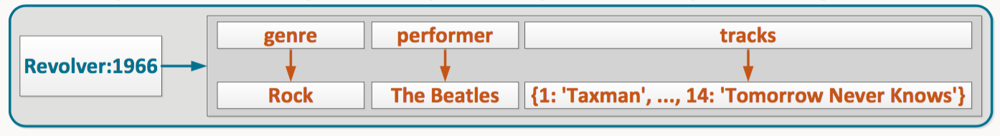
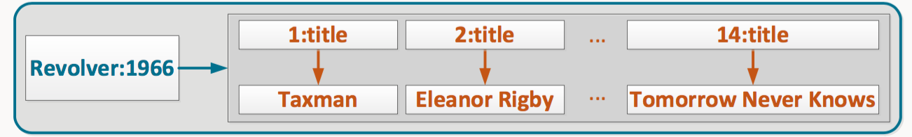
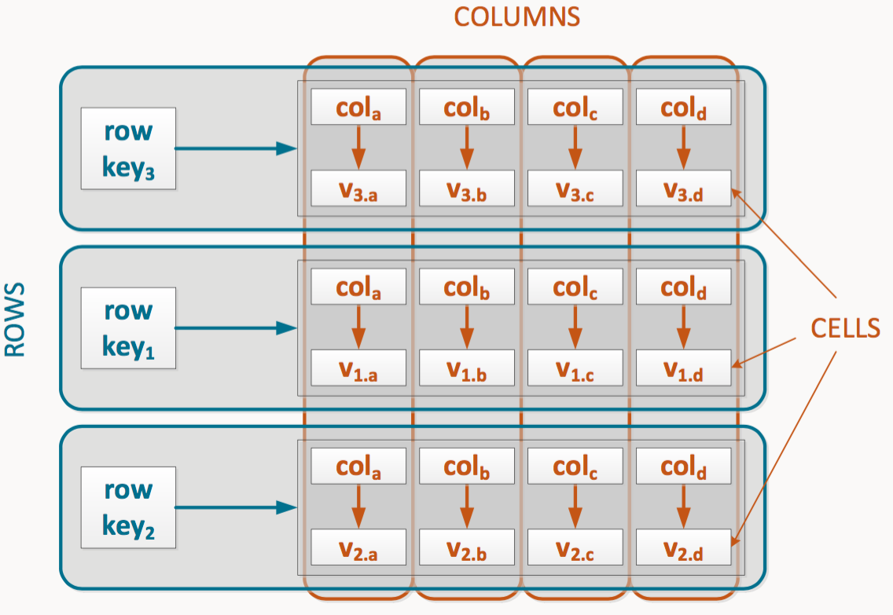
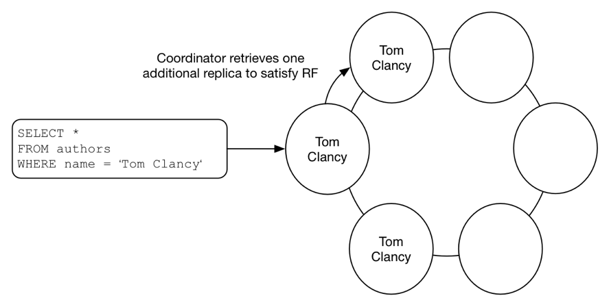
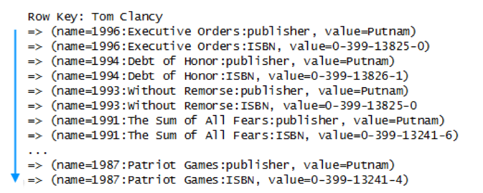
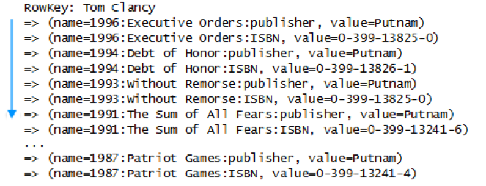
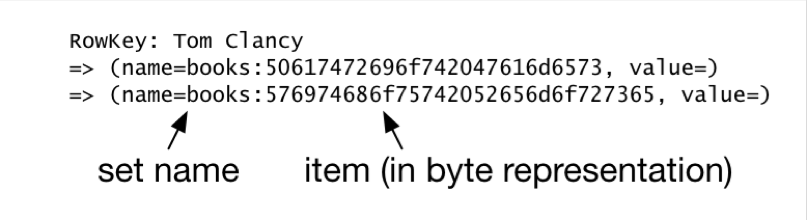
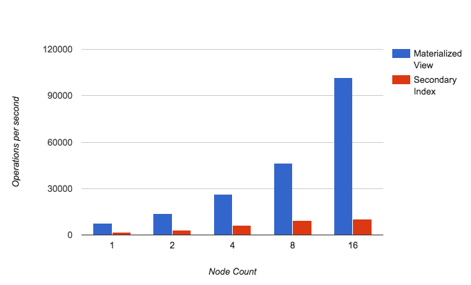
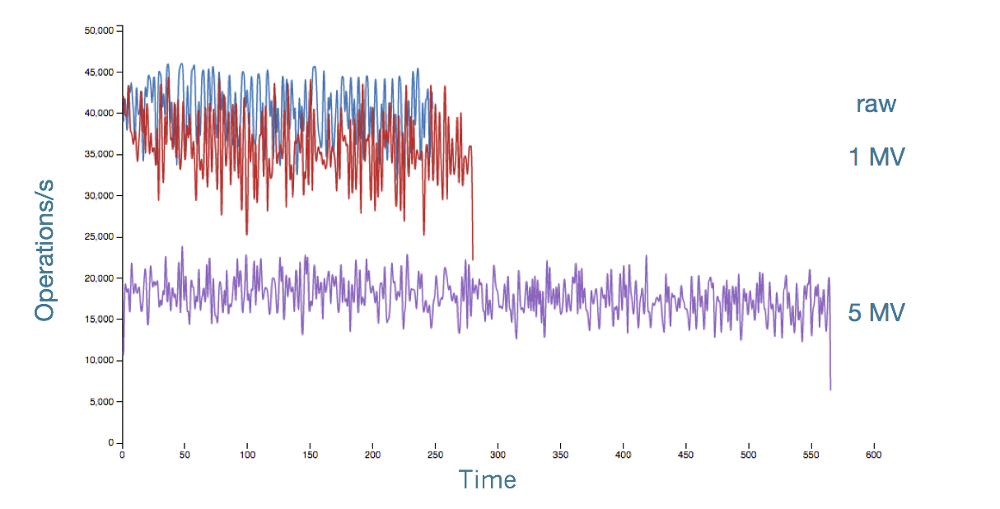

数据建模
从关系型数据库RDBMS迁移到Cassandra的一大难点是数据建模。这对已经熟悉了关系模型设计思想和SQL处理风格的开发人员来说尤其痛苦。但是，新的技术应对新的需求，在某些特定场景具有巨大的优势，因此熟悉并掌握这种新的思想对决策者来说仍然是很必要的。
本节主要整理自《Cassandra 3.x High Availablity》一书的第七章，并汇总一些互联网资料。
大多数传统的关系型数据库使用表格方法存储数据，它支持的各种随机访问查询。但是随机磁盘I/O往往是一个显著的瓶颈，因此，为了确保分布式写性能，Cassandra采用日志结构的存储引擎，这可以让它将数据顺序写入提交日志和Cassandra的持久存储结构SSTables。
数据模型
Cassandra的数据模型:
- 列族作为存储和组织数据的方式
- 表作为一个多维列族的二维视图
- 使用Cassandra查询语言（CQL）对表进行操作
Row(Partition)

Key (Partition Key)
- Composite row key

- Composite column key

Column family (Table)

Table with single-row partitions

Table with multi-row partitions

注意，请结合下述内容对上述概念进行理解。
日志结构存储
Cassandra接收到一次写操作请求时，它会将数据同时写入提交日志和一个称为memtable的内存表。提交日志可以确保Cassandra的可靠性，Memtables会周期性的写入磁盘以不可变的SSTables形式保存。
保存在SSTables中的数据拆分为分区（这些分区对应着Primary Key）并按列名称排序。这一点非常重要，本节后续部分会详细探讨。提交日志仅在节点重新启动时用于恢复未及时写入SSTables的数据。
这种存储方案的性能有几个方面与数据建模有重要的关系：
写不可变性
写总是附加操作，更新数据只需要写入新的值并附加一个新的时间戳（每一列都有带有一个时间戳）。
[ {"key": "Jack Jones", "cells": [["1:","",1470229749953090], ["1:project_name","Cassandra Tuning",1470229749953090], ["1:turnover","5000000",1470229749953090], ["2:","",1470229928612372], ["2:project_name","Spark Layer",1470229928612372], ["2:turnover","2000000",1470229928612372]]}, {"key": "Jill Hill", "cells": [["1:","",1470229908473768], ["1:project_name","Kubernetes Setup",1470229908473768], ["1:turnover","2000000",1470229908473768], ["2:","",1470229948844042], ["2:project_name","Front End",1470229948844042], ["2:turnover","1000000",1470229948844042]]} ]- 以最后一次写为准
如果磁盘上同一列存在多个版本，查询该列时，最新的数据被返回。
列无法被物理删除
不可变性也意味着DELETE操作被执行时，数据并没有被真正被删除。而是该列的值被一个
null值所覆盖。顺序查询效率最高
如果查询是顺序读取磁盘上的数据，可以借助底层存储结构的优势从而获得最大化的读性能。通常情况下，Cassandra尽量限制用户使用顺序查询，当然也有例外。
理解压缩（Compaction）
Cassandra通过一种称之为压缩（Compaction）的机制来处理随着时间推移而不断膨胀的SSTables。压缩将分散在多个文件中的分区（partitions）聚合成一个文件，并删除旧的数据，丢弃tombstones。释放空间仅是其中的一个目的，另一个重要的原因是通过将数据转移到一个SSTables中，可以降低跨文件或节点读取Key的磁盘I/O从而显著提高读的性能。
Cassandra提供了多种压缩策略，自3.8（或3.0.8）开始新增了Time-window压缩策略用于取代Date-tiered压缩策略。
Size-tiered策略
Leveled策略
Time-window策略
CQL
CQL已经取代Thrift成为与Cassandra交互的标准接口。在了解CQL之前必须要意识到CQL的数据形式并不总是与底层的数据存储结构相匹配，而且，CQL也不是SQL，你必须理解CQL表现形式的真正含义才能避免设计出与Cassandra理念背道而驰的数据模型。
下面详解CQL语句与底层存储的转换。
单个Primary Key
下面是一个名为books的表，仅有一个title主键：
CREATE TABLE books (
title text,
author text,
year int,
PRIMARY KEY (title)
);通过下述语句插入两条数据：
INSERT INTO books (title, author, year) VALUES ('Patriot Games', 'Tom Clancy', 1987);
INSERT INTO books (title, author, year) VALUES ('Without Remorse', 'Tom Clancy', 1993);查询时会得到下述结果：
“SELECT * FROM books;
title | author | year
-----------------+------------+------
Without Remorse | Tom Clancy | 1993
Patriot Games | Tom Clancy | 1987”这看上去与传统的ANSI SQL非常相似，但是对应着Cassandra的底层存储却是完全不同。
在存储层，数据用一个Row Key即title和一个name/value组成的列集合表示。每个列都有一个时间戳用于处理冲突。
系统存储时根据Row Key的哈希值在Cassandra集群节点中分布式存储，因此查询返回的结果是无序的。相对比之下，列集合中的数据是根据列名称按自然语言顺序排列的。因此上例中author排在year的前面。这一点对于构建高效的数据模型至关重要。
Row Key: Without Remorse
=> (name=author, value=Tom Clancy, timestamp=1393102991499000)
=> (name=year, value=1993, timestamp=1393102991499000)
Row Key: Patriot Games
=> (name=author, value=Tom Clancy, timestamp=1393102991499100)
=> (name=year, value=1987, timestamp=1393102991499100)注意，这是旧的pre-3.0 CLI输出，仅用于理解概念，下述同。
Compound Keys
下面看一个authors表，这个表使用name，year和title作为组合主键。
CREATE TABLE authors (
name text,
year int,
title text,
isbn text,
publisher text,
PRIMARY KEY (name, year, title)
); 插入数据后通过CQL查询显示如下：
name | year | title | isbn | publisher
------------+------+-----------------+---------------+-----------
Tom Clancy | 1987 | Patriot Games | 0-399-13241-4 | Putnam
Tom Clancy | 1993 | Without Remorse | 0-399-13825-0 | Putnam 在深入理解底层的存储转换之前，先来理解两个概念：partion keys 和 clustering columns。
Partion keys
在声明主键时，主键列表中的第一个字段必定是分区Key。这个分区Key在存储层直接作为Row Key，通过哈希算法随机地存储在集群节点上。大多数查询需要提供分区Key，以便于Cassandra能够知道请求的数据存储在哪个节点上。
Clustering columns
主键列表中除第一个字段外，剩余的字段称之为Clustering columns，它们决定了数据在磁盘上的存储顺序。这些字段不属于分区Key，因此对于定位数据存储的节点没有任何帮助。但是，这些字段决定着用户能够如何对数据进行查询，下面会详细介绍。
因此，主键列表可以用如下方式表示：
PRIMARY KEY (partition_key, clustering1, clustering2)区分了上面的差异，下面来看authors表对应的底层存储：
Row Key: Tom Clancy
= > (name = 1987: Patriot Games:ISBN, value = 0-399-13241-4)
= > (name = 1987: Patriot Games:publisher, value = Putnam)
= > (name = 1993: Without Remorse:ISBN, value = 0-399-13825-0)
= > (name = 1993: Without Remorse:publisher, value = Putnam)从上面的存储结构可以看到，CQL中的两条记录在存储时成为一条记录（列族），因为这两条记录拥有相同的分区Key。另一个有趣的地方是year和title列值的位置，它们被存储为列名称的一部分，而不是列值。注意，这只是用于展示底层的存储结构概念，实际存储中Cassandra对数据做了优化。
还需要注意的是，行集中行的顺序是先year后title，这跟它们在主键列表中定义的顺序是一致的。也可以通过WITH CLUSTERING ORDER BY语句改变行的排序规则，例如：
CREATE TABLE authors (
name text,
year int,
title text,
isbn text,
publisher text,
PRIMARY KEY (name, year, title) )
WITH CLUSTERING ORDER BY (year DESC);再对数据进行查询时，结果将显示为：
name | year | title | isbn | publisher
-----------+------+-----------------+---------------+-----------
Tom Clancy | 1993 | Without Remorse | 0-399-13825-0 | Putnam
Tom Clancy | 1987 | Patriot Games | 0-399-13241-4 | Putnam
这种建模的差异对查询操作影响很大，具体请参考后续CQL查询部分。
Composite partition keys
前例中都是单个的分区Key，也可以使用多个字段创建组合的分区Key。使用组合的分区Key的目的是用来优化数据的分布式存储策略，从而提升数据查询的速度。一个重要的例子是建模时间序列数据时使用时间桶（buckets）作为分区Key。
下面来看组合分区Key的定义：
CREATE TABLE authors (
name text,
year int,
title text,
isbn text,
publisher text,
PRIMARY KEY (( name, year), title) );在主键定义列表中，通过括号将name和year括起来，表示这是一个组合的分区Key。
在存储层，year从列名称的一部分变成了Row Key的一部分，如下所示：
Row Key: Tom Clancy: 1993
= > (name = Without Remorse:isbn, value = 0-399-13241-4)
= > (name = Without Remorse:publisher, value = 5075746e616d)
-------------------
Row Key: Tom Clancy: 1987
= > (name = Patriot Games:isbn, value = 0-399-13825-0)
= > (name = Patriot Games:publisher, value = 5075746e616d)存储模型的重要性
理解Cassandra的底层存储模型是非常重要的，主要体现在：
- 查询操作必须要考虑到底层的数据存储方式。如果你无法理解数据是如何存储的，你的查询可能会经常碰到各种错误信息，最坏的情况是性能非常差。
- 对于分区Key的选择要慎重考虑，在查询时它必须是可知的条件而且要能够很好的分散在集群中。在建模时要避免少量的分区Key对应大量的列，这会严重影响数据在集群中的分布。
- 由于Cassandra采用日志存储结构，使用区间查询时会获得很好的性能。简单来说，区间查询就是针对一个给定的分区Key按照列数据存储顺序查询其中的一部分。注意，区间查询不能跨多个分区，因为不同的分区在磁盘上对应不同的物理存储位置。
- 要慎重选择clustering columns的顺序，它们的顺序决定着数据在磁盘上的存放顺序，进而影响你能够对这些数据做什么样的查询。
在关系型数据建模时，结构规范化是要优先考虑的。与之不同，在Cassandra中进行建模时，数据如何查询是优先考虑的，这一原则必须牢记。
理解CQL查询
下面以下述authors表模型介绍CQL的各种查询：
CREATE TABLE authors ( name text, year int, title text, isbn text, publisher text,
PRIMARY KEY (name, year, title) ) WITH CLUSTERING ORDER BY (year DESC);Query by key
下面看一个使用Key的基本查询：
SELECT * FROM authors WHERE name = 'Tom Clancy';对于这个简单查询，请求首先发送到一个协调节点，这个节点拥有一个我们查询Key的副本。然后，这个节点从另一个副本存储节点获取该行（列族）以满足Quorum的要求。因此，需要两个节点才能满足此查询的要求。

在存储层，该查询首先定位分区Key的位置，然后按照列自然排序规则顺序扫描所有的列。因此，尽管看起来是一个简单查询，存储层仍然将其转换为区间查询。

Range Queries
下面来看一个区间查询的具体操作：
SELECT * FROM authors WHERE name = 'Tom Clancy' AND year > = 1993;此查询仍然只选择一个分区，因此跟前例相同，查询只需要两个节点参与。与前例不同的是，Cassandra在扫描到一条不符合条件的记录就会停止扫描。

此例中，扫描到year值为1991时，Cassandra就知道没有更多列需要扫描了。因此这个查询的效率是非常高的。
从上面的两个示例我们可以总结以下三点：
- 顺序查询是高效的，它充分利用了Cassandra在存储层的自然排序存储机制。
- 以分区Key或者分区Key与Clustering columns组合条件的查询在存储层是顺序查询，这也意味着这类查询是优化的。
- 尽量按照你读数据的方式去写数据。这与关系型数据库建模是不同的。
拥抱反范式
关系型数据库中的范式建模在很大程度上会导致客户端使用联合查询（joins）。以authors表为例，author和book的一对多关系会要求将books建为另一张表，每个表都有一个ID主键，books表有一个authorID作为外键。
CREATE TABLE authors ( authorID int, name varchar( 50), PRIMARY KEY (authorID) )
CREATE TABLE books ( bookID int, authorID int, name varchar( 100), year int, INDEX auth_ind (authorID), FOREIGN KEY (authorID) REFERENCES authors( authorID) )这种联合查询在关系型数据库中很常见，但是放到Cassandra这种分布式数据库中，一次联合查询需要跨多个表，而一个表需要跨多个节点，其复杂性和效率可想而知。
在Cassandra中，使用一个authors表和一个books集合就可以解决这种需求。
尽管在Cassandra中仍然可以采用第二索引避免反范式数据模型，但这并不是好的方案。
使用集合实现反范式
Cassandra支持三种集合类型：Sets，Lists 和 Maps。在具体介绍之前首先要知道使用集合的几个原则：
- 集合中的每个数据项的大小不能超过64KB
- 在同一个集合中最多可以存储64000个数据项
- 查询一个集合总是会返回整个集合
- 集合最好用来建模小的有限的数据集
Sets
CQL中的Set与编程语言中的Set类似，集合中的数据项是唯一的。稍有差异的是，在Cassandra中，Set中的数据项是按自然语言排序的。
下面来看一个包含了books集合的authors表：
CREATE TABLE authors (
name text,
books set < text >,
PRIMARY KEY (name) );
可以对这个表进行INSERT和UPDATE操作：
INSERT INTO authors (name, books) VALUES (' Tom Clancy', {' Without Remorse', 'Patriot Games'});
-- 向集合中添加数据
UPDATE authors SET books = books + {' Red Storm Rising'} WHERE name = 'Tom Clancy';
-- 从集合中移除数据
UPDATE authors SET books = books - {' Red Storm Rising'} WHERE name = 'Tom Clancy';在存储层，Set集合的数据项被存储为列名称，列值留空。这可以确保数据的唯一性，因为任何更改只需要覆盖旧的列名称。
books在存储层的示意结构如下图所示：

可以看到set集合的名称作为列名称的一部分，集合中的数据项作为列名称的另一部分。
Lists
从CQL层看，Lists与Sets非常相似：
CREATE TABLE authors (
name text,
books list<text>,
PRIMARY KEY (name)
);对Lists集合的INSERT和UPDATE操作：
INSERT INTO authors (name, books)
VALUES ('Tom Clancy', ['Without Remorse', 'Patriot Games']);
-- 由于List是有序的，因此CQL支持prepend和append操作
UPDATE authors
SET books = books + ['Red Storm Rising']
WHERE name = 'Tom Clancy';
UPDATE authors
SET books = ['Red Storm Rising'] + books
WHERE name = 'Tom Clancy';
-- 可以删除指定name的数据项
UPDATE authors
SET books = books - ['Red Storm Rising']
WHERE name = 'Tom Clancy';不同于Set集合，List集合在存储层将数据项放置在列值中，列名称用UUID来确保集合顺序。
Row Key: Tom Clancy
=> (name=books:d36de8b0305011e4a0dddbbeade718be, value=576974686f)
=> (name=books:d36de8b1305011e4a0dddbbeade718be, value=506174726)Maps
CREATE TABLE authors (
name text,
books map<text, int>,
PRIMARY KEY (name)
);对Map集合执行INSERT，UPDATE和DELETE操作：
INSERT INTO authors (name, books)
VALUES ('Tom Clancy', {'Without Remorse':1993, 'Patriot Games':1987});
UPDATE authors
SET books['Red Storm Rising'] = 1986
WHERE name = 'Tom Clancy';
DELETE books['Red Storm Rising']
FROM authors WHERE name = 'Tom Clancy';
在存储层，Map与List的存储类似，差别是排序的ID被替换成Map的Key：
RowKey: Tom Clancy
=> (name=books:50617472696f742047616d6573, value=000007c3)
=> (name=books:576974686f75742052656d6f727365, value=000007c9)从上述存储结构可以看到，集合类型使用了类似Clustering columns的组合列存储，但是，当前Cassandra并不支持集合类型的区间查询。
使用Materialized views（MV）实现反范式
在很多场景中，你可能需要使用不同的主键来查询数据。为了能够使用分区Key并顺序读取数据，在3.0版本之前，需要创建多张表，每张表对应不同的查询类型。
Cassandra从3.0版本开始，提供了一种称之为Materialized views的特性，该功能负责自动构建数据的不同视图来满足不同类型的查询。
创建Materialized views非常简单，以前述authors表为例，如果需要查询给定year的所有authors，可定义如下视图：
CREATE MATERIALIZED VIEW books_by_year AS
SELECT *
FROM authors
WHERE year IS NOT NULL
AND name IS NOT NULL
AND title IS NOT NULL
PRIMARY KEY (year, name, title);当向authors表中插入新数据时，Cassandra会自动更新该视图，以便于按下述条件查询：
SELECT * FROM books_by_year
WHERE year = 1987;CQL要求查询时必须使用非空（non-null）的主键列作为查询条件。在上例中使用了 IS NOT NULL限定。创建Materialized views时也可以在WHERE语句中使用数据过滤，如：
CREATE MATERIALIZED VIEW clancy_books AS
SELECT *
FROM authors
WHERE name = 'Tom Clancy'
AND title IS NOT NULL
AND year IS NOT NULL
PRIMARY KEY (name, title, year);使用Materialized views时，当数据出现变更，Cassandra需要同时写入基本表和视图表。这是有性能损耗的，但相比于二级索引，MV仍然保持很高的性能。下图是官方的对比数据：

MV的工作机制如下图所示：

使用了MV之后，更新/插入操作需要先read然后再写，此外还要做一致性检查，都会存在性能损耗。
下图是官方给出的原始写（raw ）与采用了MV的写性能对比

总之，使用MV时要注意以下几点：
- 从MV读取数据跟从原始表读数据的性能是一样的
- 写数据的时候，每一个MV性能会下降10%.
- 如果Primary Key 只有1个，MV的性能要好于人工反范式（手工维护多张表）.
- 对于复合主键(Compund primary keys)，MV相对来说还是要快的，但是当复合主键太长（比如>100）的时候，人工可能还要快一些
- 如果原始表有大规模删除，MV需要发起很多CQL来查询与删除。性能可能会急剧下降
- MV主键的设计还是要考虑是否会造成热点（hot spot）。hot spot 依然会造成性能问题，甚至OOM
- 当前MV仅支持select。
操纵时间序列数据
近二十多年，数据建模都是围绕着实体关系进行。最近几年，人们开始给数据加入时间维度，即除了实体间的关系，大家开始关注这些关系是如何随时间变化的。关系型建模和时间序列数据建模的一个有趣而重要的差异是关系数据是可变的而时间序列数据是不可变的。可变数据是不稳定的，因为它可能随时改变。为保证我们有最新的数据版本处理过程变得非常复杂。相比之下，不可变数据是稳定的，这意味着我们可以避免与随时间变化的数据相关的许多复杂性。
下述是一个定义传感器数据表示例：
CREATE TABLE sensor_readings (
sensorID uuid,
time_bucket int,
timestamp bigint,
reading decimal,
PRIMARY KEY ((sensorID, time_bucket), timestamp)
) WITH CLUSTERING ORDER BY (timestamp DESC);